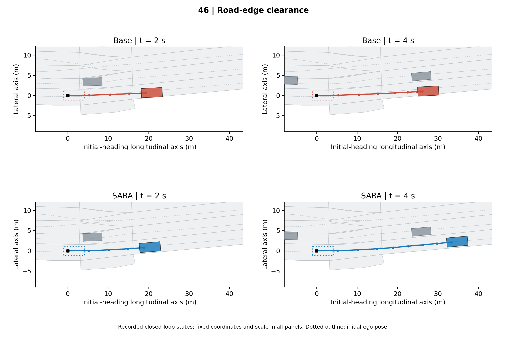
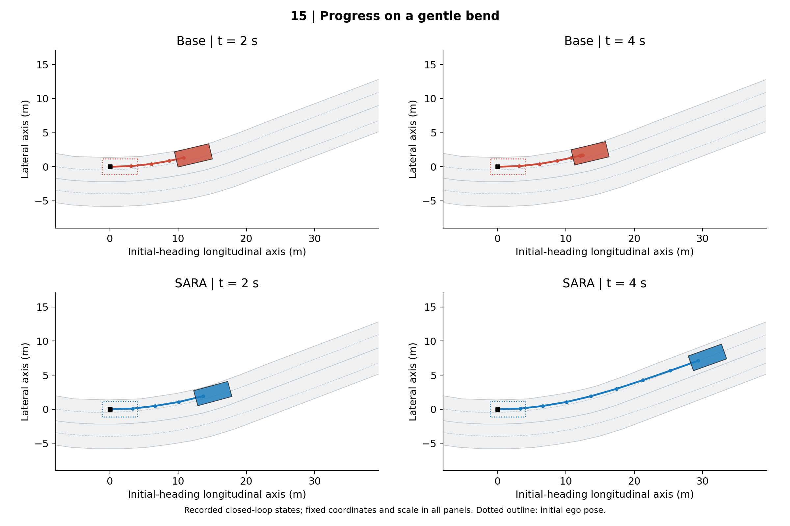
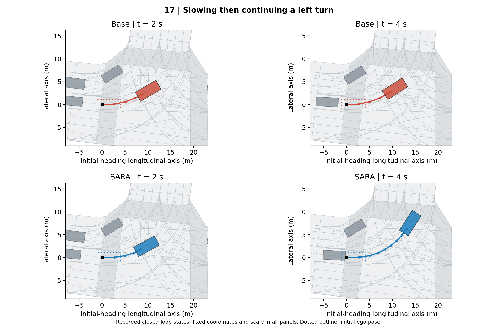
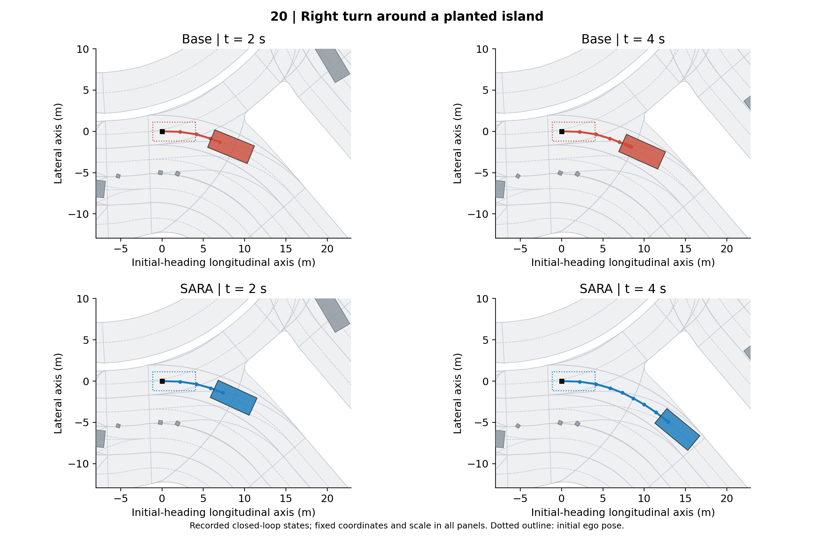
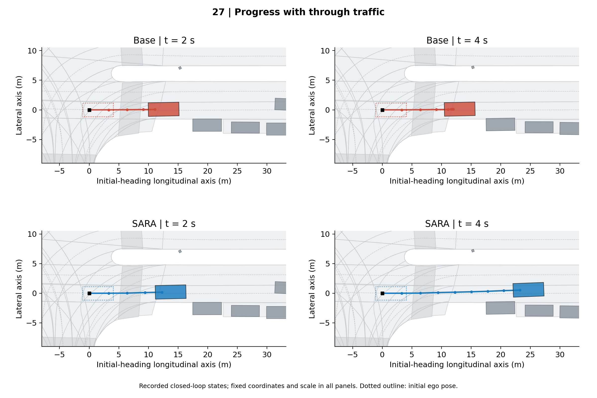

上排 Base、下排 SARA；左列 2 秒、右列 4 秒。固定坐标，无箭头。
15、17、27 的 Base 原始采样分别有约 0.321、0.291、0.359 m 的累计车头反方向位移（累计回退，不是首尾净位移）；这是记录本身的低速回退，已原样保留。20、41、42、46 两边和本包七例的 SARA 均未检出采样回退。
修改说明 · 绘图 Python · 数值汇总

GIF · 原先预览图 · 前视画面 · PDF



